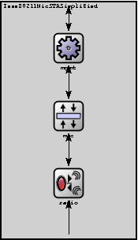
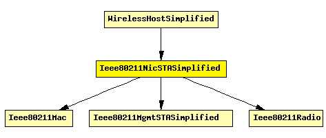

File: NetworkInterfaces/Ieee80211/Ieee80211NicSTASimplified.ned
This NIC implements an infrastructure mode 802.11 network interface card for a host (STA), but using a simplified mgmt module that does not support handovers.
The following diagram shows usage relationships between modules, networks and channels. Unresolved module (and channel) types are missing from the diagram. Click here to see the full picture.
If a module type shows up more than once, that means it has been defined in more than one NED file.
| Ieee80211Mac | Implementation of the 802.11b MAC protocol. This module is intended to be used in combination with the Ieee80211Radio module as the physical layer. (The SnrEval80211 and Decider80211 modules should also work if per-packet bitrate setting gets implemented.) |
| Ieee80211MgmtSTASimplified | Used in 802.11 infrastructure mode: handles management frames for a station (STA). Relies on the MAC layer (Ieee80211Mac) for reception and transmission of frames. |
| Ieee80211Radio | Physical layer for the IEEE 802.11 models. Its external interface (including gates and how it communicates with other modules) is the same as the Radio module's. |
If a module type shows up more than once, that means it has been defined in more than one NED file.
| WirelessHostSimplified | Models a host with one wireless (802.11b) card in infrastructure mode, but using a simplified NIC that does not support handovers. This module is basically a StandardHost with an Ieee80211NicSTASimplified added. It should be used in conjunction with WirelessAPSimplified, or any other AP model which contains Ieee80211NicAPSimplified. |
| Name | Direction | Description |
|---|---|---|
| uppergateIn | input | to upper layers |
| uppergateOut | output | from upper layers |
| radioIn | input | to receive AirFrames |
| Name | Type | Description |
|---|---|---|
| mgmt.accessPointAddress | string | MAC address of associate AP |
| mgmt.frameCapacity | numeric | |
| mac.address | string | MAC address as hex string (12 hex digits), or "auto". "auto" values will be replaced by a generated MAC address in init stage 0. |
| mac.maxQueueSize | numeric const | max queue length in frames; only used if queueModule=="" |
| mac.bitrate | numeric const | |
| mac.rtsThresholdBytes | numeric const | longer messages will be sent using RTS/CTS; use 2346 for default |
| mac.retryLimit | numeric const | maximum number of retries per message, -1 means default |
| mac.cwMinData | numeric const | contention window for normal data frames, -1 means default |
| mac.cwMinBroadcast | numeric const | contention window for broadcast messages, -1 means default |
| radio.channelNumber | numeric const | channel identifier |
| radio.transmitterPower | numeric const | power used for transmission of messages (in mW) |
| radio.bitrate | numeric const | (in bits/s) |
| radio.thermalNoise | numeric const | base noise level (dBm) |
| radio.pathLossAlpha | numeric const | used by the path loss calculation |
| radio.snirThreshold | numeric const | if signal-noise ratio is below this threshold, frame is considered noise (in dB) |
| radio.sensitivity | numeric const | received signals with power below sensitivity are ignored |
module Ieee80211NicSTASimplified gates: in: uppergateIn; // to upper layers out: uppergateOut; // from upper layers in: radioIn; // to receive AirFrames submodules: mgmt: Ieee80211MgmtSTASimplified; display: "p=96,69;i=block/cogwheel;q=wlanDataQueue"; mac: Ieee80211Mac; parameters: queueModule = "mgmt"; display: "p=96,155;i=block/layer"; radio: Ieee80211Radio; display: "p=96,240;i=block/wrxtx"; connections: radioIn --> radio.radioIn; radio.uppergateOut --> mac.lowergateIn; radio.uppergateIn <-- mac.lowergateOut; mac.uppergateOut --> mgmt.macIn; mac.uppergateIn <-- mgmt.macOut; mgmt.uppergateOut --> uppergateOut; mgmt.uppergateIn <-- uppergateIn; endmodule